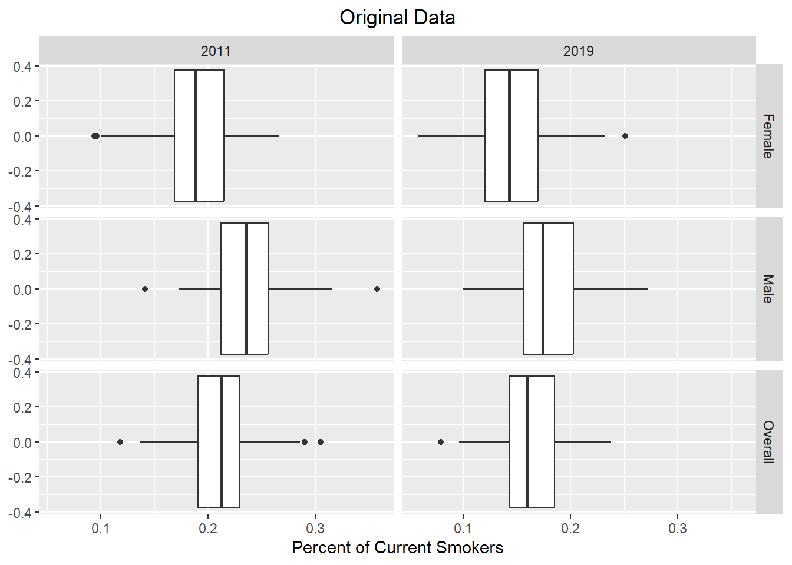
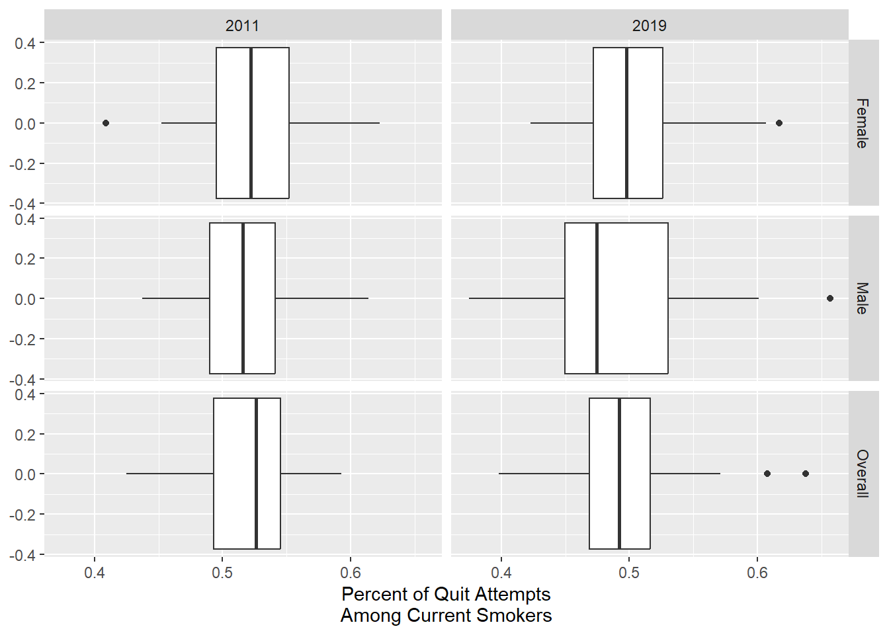
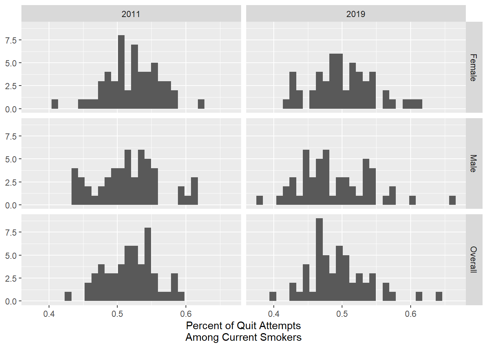

pacman::p_load(here, tidyverse, skimr, plotly, synthpop, patchwork)CDC Data Exercise
Exploring the original data set
The CDC data set I have chosen for this exercise is the Tobacco Usage Behavioral Risk Factor data set. The data comes from a survey administered by the CDC as part of the State Tobacco Activities Tracking and Evaluation (STATE) system. The data set contains information about the year the survey was administered, respondent location (State or territory), demographics (namely Race, Age, Education, and Gender), and it asks questions about a person’s tobacco usage status (current, former, never used), their cessation status (whether they have quit or attempted to quit in the last year), and the frequency that they use tobacco for those that do (daily, some days). The usage questions are asked for three different types of Tobacco products, Cigarettes, Smokeless Tobacco, and E-cigarettes.
rawdata <- read_csv('cdc-data-raw.csv')Rows: 43341 Columns: 31
── Column specification ────────────────────────────────────────────────────────
Delimiter: ","
chr (25): YEAR, LocationAbbr, LocationDesc, TopicType, TopicDesc, MeasureDes...
dbl (6): Data_Value, Data_Value_Std_Err, Low_Confidence_Limit, High_Confide...
ℹ Use `spec()` to retrieve the full column specification for this data.
ℹ Specify the column types or set `show_col_types = FALSE` to quiet this message.str(rawdata) # getting an idea for data structurespc_tbl_ [43,341 × 31] (S3: spec_tbl_df/tbl_df/tbl/data.frame)
$ YEAR : chr [1:43341] "2017" "2018" "2017" "2016" ...
$ LocationAbbr : chr [1:43341] "GU" "US" "US" "GU" ...
$ LocationDesc : chr [1:43341] "Guam" "National Median (States and DC)" "National Median (States and DC)" "Guam" ...
$ TopicType : chr [1:43341] "Tobacco Use – Survey Data" "Tobacco Use – Survey Data" "Tobacco Use – Survey Data" "Tobacco Use – Survey Data" ...
$ TopicDesc : chr [1:43341] "Cigarette Use (Adults)" "Cigarette Use (Adults)" "Cigarette Use (Adults)" "Smokeless Tobacco Use (Adults)" ...
$ MeasureDesc : chr [1:43341] "Current Smoking" "Smoking Status" "Smoking Status" "Current Use" ...
$ DataSource : chr [1:43341] "BRFSS" "BRFSS" "BRFSS" "BRFSS" ...
$ Response : chr [1:43341] NA "Current" "Never" NA ...
$ Data_Value_Unit : chr [1:43341] "%" "%" "%" "%" ...
$ Data_Value_Type : chr [1:43341] "Percentage" "Percentage" "Percentage" "Percentage" ...
$ Data_Value : num [1:43341] 30 16.1 58.2 0.5 21.9 21.6 2.8 3.6 29.2 14.8 ...
$ Data_Value_Footnote_Symbol: chr [1:43341] NA NA NA NA ...
$ Data_Value_Footnote : chr [1:43341] NA NA NA NA ...
$ Data_Value_Std_Err : num [1:43341] 2.3 NA NA 0.4 4.9 0.8 0.3 0.4 2.4 0.6 ...
$ Low_Confidence_Limit : num [1:43341] 25.4 NA NA 0 12.4 20 2.2 2.7 24.5 13.6 ...
$ High_Confidence_Limit : num [1:43341] 34.6 NA NA 1.2 31.4 23.2 3.4 4.5 33.9 16 ...
$ Sample_Size : num [1:43341] 692 NA NA 123 209 ...
$ Gender : chr [1:43341] "Male" "Overall" "Overall" "Overall" ...
$ Race : chr [1:43341] "All Races" "All Races" "All Races" "Hispanic" ...
$ Age : chr [1:43341] "All Ages" "All Ages" "All Ages" "All Ages" ...
$ Education : chr [1:43341] "All Grades" "All Grades" "All Grades" "All Grades" ...
$ GeoLocation : chr [1:43341] "(13.444304, 144.793731)" NA NA "(13.444304, 144.793731)" ...
$ TopicTypeId : chr [1:43341] "BEH" "BEH" "BEH" "BEH" ...
$ TopicId : chr [1:43341] "100BEH" "100BEH" "100BEH" "150BEH" ...
$ MeasureId : chr [1:43341] "110CSA" "165SSA" "165SSA" "177SCU" ...
$ StratificationID1 : chr [1:43341] "2GEN" "1GEN" "1GEN" "1GEN" ...
$ StratificationID2 : chr [1:43341] "8AGE" "8AGE" "8AGE" "8AGE" ...
$ StratificationID3 : chr [1:43341] "6RAC" "6RAC" "6RAC" "4RAC" ...
$ StratificationID4 : chr [1:43341] "6EDU" "6EDU" "6EDU" "6EDU" ...
$ SubMeasureID : chr [1:43341] "BRF21" "BRF27" "BRF28" "BRF69" ...
$ DisplayOrder : num [1:43341] 21 27 28 69 22 21 77 71 26 27 ...
- attr(*, "spec")=
.. cols(
.. YEAR = col_character(),
.. LocationAbbr = col_character(),
.. LocationDesc = col_character(),
.. TopicType = col_character(),
.. TopicDesc = col_character(),
.. MeasureDesc = col_character(),
.. DataSource = col_character(),
.. Response = col_character(),
.. Data_Value_Unit = col_character(),
.. Data_Value_Type = col_character(),
.. Data_Value = col_double(),
.. Data_Value_Footnote_Symbol = col_character(),
.. Data_Value_Footnote = col_character(),
.. Data_Value_Std_Err = col_double(),
.. Low_Confidence_Limit = col_double(),
.. High_Confidence_Limit = col_double(),
.. Sample_Size = col_double(),
.. Gender = col_character(),
.. Race = col_character(),
.. Age = col_character(),
.. Education = col_character(),
.. GeoLocation = col_character(),
.. TopicTypeId = col_character(),
.. TopicId = col_character(),
.. MeasureId = col_character(),
.. StratificationID1 = col_character(),
.. StratificationID2 = col_character(),
.. StratificationID3 = col_character(),
.. StratificationID4 = col_character(),
.. SubMeasureID = col_character(),
.. DisplayOrder = col_double()
.. )
- attr(*, "problems")=<externalptr> summary(rawdata) # summary statistics YEAR LocationAbbr LocationDesc TopicType
Length:43341 Length:43341 Length:43341 Length:43341
Class :character Class :character Class :character Class :character
Mode :character Mode :character Mode :character Mode :character
TopicDesc MeasureDesc DataSource Response
Length:43341 Length:43341 Length:43341 Length:43341
Class :character Class :character Class :character Class :character
Mode :character Mode :character Mode :character Mode :character
Data_Value_Unit Data_Value_Type Data_Value
Length:43341 Length:43341 Min. : 0.00
Class :character Class :character 1st Qu.: 5.10
Mode :character Mode :character Median :17.10
Mean :25.36
3rd Qu.:38.90
Max. :99.90
NA's :2117
Data_Value_Footnote_Symbol Data_Value_Footnote Data_Value_Std_Err
Length:43341 Length:43341 Min. : 0.000
Class :character Class :character 1st Qu.: 0.600
Mode :character Mode :character Median : 1.100
Mean : 1.711
3rd Qu.: 2.200
Max. :16.600
NA's :2195
Low_Confidence_Limit High_Confidence_Limit Sample_Size Gender
Min. : 0.00 Min. : 0.00 Min. : 50 Length:43341
1st Qu.: 3.20 1st Qu.: 6.90 1st Qu.: 480 Class :character
Median :14.30 Median : 19.80 Median : 1798 Mode :character
Mean :22.01 Mean : 28.68 Mean : 3050
3rd Qu.:30.50 3rd Qu.: 47.40 3rd Qu.: 4203
Max. :99.80 Max. :100.00 Max. :40726
NA's :2195 NA's :2195 NA's :2195
Race Age Education GeoLocation
Length:43341 Length:43341 Length:43341 Length:43341
Class :character Class :character Class :character Class :character
Mode :character Mode :character Mode :character Mode :character
TopicTypeId TopicId MeasureId StratificationID1
Length:43341 Length:43341 Length:43341 Length:43341
Class :character Class :character Class :character Class :character
Mode :character Mode :character Mode :character Mode :character
StratificationID2 StratificationID3 StratificationID4 SubMeasureID
Length:43341 Length:43341 Length:43341 Length:43341
Class :character Class :character Class :character Class :character
Mode :character Mode :character Mode :character Mode :character
DisplayOrder
Min. : 5.00
1st Qu.:24.00
Median :51.00
Mean :47.08
3rd Qu.:71.00
Max. :81.00
skim(rawdata) # primarily to get completion rates| Name | rawdata |
| Number of rows | 43341 |
| Number of columns | 31 |
| _______________________ | |
| Column type frequency: | |
| character | 25 |
| numeric | 6 |
| ________________________ | |
| Group variables | None |
Variable type: character
| skim_variable | n_missing | complete_rate | min | max | empty | n_unique | whitespace |
|---|---|---|---|---|---|---|---|
| YEAR | 0 | 1.00 | 4 | 9 | 0 | 17 | 0 |
| LocationAbbr | 0 | 1.00 | 2 | 2 | 0 | 54 | 0 |
| LocationDesc | 0 | 1.00 | 4 | 31 | 0 | 54 | 0 |
| TopicType | 0 | 1.00 | 25 | 25 | 0 | 1 | 0 |
| TopicDesc | 0 | 1.00 | 18 | 30 | 0 | 4 | 0 |
| MeasureDesc | 0 | 1.00 | 11 | 59 | 0 | 10 | 0 |
| DataSource | 0 | 1.00 | 5 | 5 | 0 | 1 | 0 |
| Response | 28323 | 0.35 | 5 | 11 | 0 | 6 | 0 |
| Data_Value_Unit | 0 | 1.00 | 1 | 1 | 0 | 1 | 0 |
| Data_Value_Type | 0 | 1.00 | 10 | 10 | 0 | 1 | 0 |
| Data_Value_Footnote_Symbol | 41224 | 0.05 | 1 | 1 | 0 | 1 | 0 |
| Data_Value_Footnote | 41224 | 0.05 | 71 | 71 | 0 | 1 | 0 |
| Gender | 0 | 1.00 | 4 | 7 | 0 | 3 | 0 |
| Race | 0 | 1.00 | 5 | 29 | 0 | 6 | 0 |
| Age | 0 | 1.00 | 8 | 18 | 0 | 8 | 0 |
| Education | 0 | 1.00 | 10 | 12 | 0 | 4 | 0 |
| GeoLocation | 78 | 1.00 | 23 | 41 | 0 | 53 | 0 |
| TopicTypeId | 0 | 1.00 | 3 | 3 | 0 | 1 | 0 |
| TopicId | 0 | 1.00 | 6 | 6 | 0 | 4 | 0 |
| MeasureId | 0 | 1.00 | 6 | 6 | 0 | 14 | 0 |
| StratificationID1 | 0 | 1.00 | 4 | 4 | 0 | 3 | 0 |
| StratificationID2 | 0 | 1.00 | 4 | 4 | 0 | 8 | 0 |
| StratificationID3 | 0 | 1.00 | 4 | 4 | 0 | 6 | 0 |
| StratificationID4 | 0 | 1.00 | 4 | 4 | 0 | 4 | 0 |
| SubMeasureID | 0 | 1.00 | 5 | 5 | 0 | 53 | 0 |
Variable type: numeric
| skim_variable | n_missing | complete_rate | mean | sd | p0 | p25 | p50 | p75 | p100 | hist |
|---|---|---|---|---|---|---|---|---|---|---|
| Data_Value | 2117 | 0.95 | 25.36 | 25.00 | 0 | 5.1 | 17.1 | 38.9 | 99.9 | ▇▃▂▁▁ |
| Data_Value_Std_Err | 2195 | 0.95 | 1.71 | 1.72 | 0 | 0.6 | 1.1 | 2.2 | 16.6 | ▇▁▁▁▁ |
| Low_Confidence_Limit | 2195 | 0.95 | 22.01 | 24.14 | 0 | 3.2 | 14.3 | 30.5 | 99.8 | ▇▂▂▁▁ |
| High_Confidence_Limit | 2195 | 0.95 | 28.68 | 26.21 | 0 | 6.9 | 19.8 | 47.4 | 100.0 | ▇▃▂▂▁ |
| Sample_Size | 2195 | 0.95 | 3050.17 | 3798.87 | 50 | 480.0 | 1798.0 | 4203.0 | 40726.0 | ▇▁▁▁▁ |
| DisplayOrder | 0 | 1.00 | 47.08 | 24.49 | 5 | 24.0 | 51.0 | 71.0 | 81.0 | ▂▇▁▂▇ |
head(rawdata, 20) # getting first 20 rows# A tibble: 20 × 31
YEAR LocationAbbr LocationDesc TopicType TopicDesc MeasureDesc DataSource
<chr> <chr> <chr> <chr> <chr> <chr> <chr>
1 2017 GU Guam Tobacco … Cigarett… Current Sm… BRFSS
2 2018 US National Me… Tobacco … Cigarett… Smoking St… BRFSS
3 2017 US National Me… Tobacco … Cigarett… Smoking St… BRFSS
4 2016 GU Guam Tobacco … Smokeles… Current Use BRFSS
5 2014 GU Guam Tobacco … Cigarett… Current Sm… BRFSS
6 2012 IN Indiana Tobacco … Cigarett… Current Sm… BRFSS
7 2018-20… DE Delaware Tobacco … Smokeles… Current Us… BRFSS
8 2011 MO Missouri Tobacco … Smokeles… Current Use BRFSS
9 2013 ME Maine Tobacco … Cigarett… Smoking Fr… BRFSS
10 2017 WA Washington Tobacco … Cigarett… Smoking St… BRFSS
11 2014-20… IL Illinois Tobacco … Cigarett… Current Sm… BRFSS
12 2011 MN Minnesota Tobacco … Smokeles… User Status BRFSS
13 2018 VA Virginia Tobacco … Cigarett… Smoking Fr… BRFSS
14 2014 MN Minnesota Tobacco … Cigarett… Smoking St… BRFSS
15 2017-20… WA Washington Tobacco … Cigarett… Current Sm… BRFSS
16 2017 UT Utah Tobacco … Smokeles… Current Use BRFSS
17 2012 CA California Tobacco … Smokeles… Frequency … BRFSS
18 2015 FL Florida Tobacco … Smokeles… Current Use BRFSS
19 2015 RI Rhode Island Tobacco … Smokeles… Current Use BRFSS
20 2019 AZ Arizona Tobacco … Smokeles… Current Use BRFSS
# ℹ 24 more variables: Response <chr>, Data_Value_Unit <chr>,
# Data_Value_Type <chr>, Data_Value <dbl>, Data_Value_Footnote_Symbol <chr>,
# Data_Value_Footnote <chr>, Data_Value_Std_Err <dbl>,
# Low_Confidence_Limit <dbl>, High_Confidence_Limit <dbl>, Sample_Size <dbl>,
# Gender <chr>, Race <chr>, Age <chr>, Education <chr>, GeoLocation <chr>,
# TopicTypeId <chr>, TopicId <chr>, MeasureId <chr>, StratificationID1 <chr>,
# StratificationID2 <chr>, StratificationID3 <chr>, …The data set is not the most analyst friendly format. Generally the ideal format would be variables in the columns, observations in the rows. This data set has variables across several rows, and it is mostly aggregated. The questions are broken up by the different response options, which are spread across rows even though the values are proportions and therefore the samples sizes listed for the different response options for a single question come from the same audience. Aggregations grouped by each of the demographics, locations, and timeframes are also in the rows, similar to a pivot table, so getting things like summary statistics will require filtering these aggregated values. Some survey question variables have missing values, but with the data in this format it’s difficult to make much of them, but we will come back to that. There are a few variables that only serve to give information about the data set itself, like Data_Value_Unit, which only contains one value, “Percentage”, to inform that the Value column is a percentage. Variable like this (Zero or Near Zero Variance) can be removed, since they give no information about the individual observations.
Variables to be removed: Zero Variance variables: Data_Value_Unit, Data_Value_Type, DataSource, TopicType, TopicTypeId NZV: Data_Value_Footnote_Symbol, Data_Value_Footnote
rawdata %>% filter(is.na(Data_Value)) #looking at nulls to determine why they are there# A tibble: 2,117 × 31
YEAR LocationAbbr LocationDesc TopicType TopicDesc MeasureDesc DataSource
<chr> <chr> <chr> <chr> <chr> <chr> <chr>
1 2014-20… IL Illinois Tobacco … Cigarett… Current Sm… BRFSS
2 2016 IA Iowa Tobacco … Smokeles… Frequency … BRFSS
3 2014 ID Idaho Tobacco … Smokeles… Frequency … BRFSS
4 2019 MI Michigan Tobacco … Smokeles… Frequency … BRFSS
5 2016-20… MA Massachuset… Tobacco … Smokeles… Current Us… BRFSS
6 2013-20… DC District of… Tobacco … Cigarett… Current Sm… BRFSS
7 2013 ME Maine Tobacco … Cigarett… Current Sm… BRFSS
8 2011 AZ Arizona Tobacco … Smokeles… Frequency … BRFSS
9 2018 AL Alabama Tobacco … Smokeles… Frequency … BRFSS
10 2018 NC North Carol… Tobacco … Smokeles… Frequency … BRFSS
# ℹ 2,107 more rows
# ℹ 24 more variables: Response <chr>, Data_Value_Unit <chr>,
# Data_Value_Type <chr>, Data_Value <dbl>, Data_Value_Footnote_Symbol <chr>,
# Data_Value_Footnote <chr>, Data_Value_Std_Err <dbl>,
# Low_Confidence_Limit <dbl>, High_Confidence_Limit <dbl>, Sample_Size <dbl>,
# Gender <chr>, Race <chr>, Age <chr>, Education <chr>, GeoLocation <chr>,
# TopicTypeId <chr>, TopicId <chr>, MeasureId <chr>, …Missing values from the Data_Value column occur when the sample size is not large enough to report results. Some of these missing values may have the opportunity for imputation, and filtering these could cause some confusion in the actual structure of the data (complete and consistent combinations of categorical values) so we won’t filter anything out just yet. note this is evidenced by the Footnote column with the following message: “Data in these cells have been suppressed because of a small sample size.”
unique(paste(rawdata$LocationDesc,rawdata$LocationAbbr)) # paste concatenates columns, unique to get distinct values. [1] "Guam GU" "National Median (States and DC) US"
[3] "Indiana IN" "Delaware DE"
[5] "Missouri MO" "Maine ME"
[7] "Washington WA" "Illinois IL"
[9] "Minnesota MN" "Virginia VA"
[11] "Utah UT" "California CA"
[13] "Florida FL" "Rhode Island RI"
[15] "Arizona AZ" "District of Columbia DC"
[17] "Kansas KS" "Nevada NV"
[19] "Alabama AL" "West Virginia WV"
[21] "Wisconsin WI" "Oklahoma OK"
[23] "New York NY" "Iowa IA"
[25] "Colorado CO" "Idaho ID"
[27] "Alaska AK" "North Dakota ND"
[29] "North Carolina NC" "New Hampshire NH"
[31] "Vermont VT" "Texas TX"
[33] "Nebraska NE" "Hawaii HI"
[35] "Wyoming WY" "South Dakota SD"
[37] "Louisiana LA" "Kentucky KY"
[39] "Puerto Rico PR" "Arkansas AR"
[41] "Maryland MD" "Ohio OH"
[43] "South Carolina SC" "Massachusetts MA"
[45] "Michigan MI" "Oregon OR"
[47] "Montana MT" "Tennessee TN"
[49] "Connecticut CT" "Mississippi MS"
[51] "New Mexico NM" "Pennsylvania PA"
[53] "New Jersey NJ" "Georgia GA" To understand the scope of the data set and check for things like inconsistencies, mismatched abbreviations, etc we look at all the unique values for LocationDesc and LocationAbbr. For simplicity sake I will remove the Abbreviated column in the future.
unique(rawdata$YEAR) # seeing unique values of year [1] "2017" "2018" "2016" "2014" "2012" "2018-2019"
[7] "2011" "2013" "2014-2015" "2017-2018" "2015" "2019"
[13] "2016-2017" "2013-2014" "2015-2016" "2011-2012" "2012-2013"rawdata %>% filter(nchar(YEAR) > 4) # confirming what the two-year values are# A tibble: 4,670 × 31
YEAR LocationAbbr LocationDesc TopicType TopicDesc MeasureDesc DataSource
<chr> <chr> <chr> <chr> <chr> <chr> <chr>
1 2018-20… DE Delaware Tobacco … Smokeles… Current Us… BRFSS
2 2014-20… IL Illinois Tobacco … Cigarett… Current Sm… BRFSS
3 2017-20… WA Washington Tobacco … Cigarett… Current Sm… BRFSS
4 2018-20… DC District of… Tobacco … Smokeles… Current Us… BRFSS
5 2016-20… ID Idaho Tobacco … Cigarett… Current Sm… BRFSS
6 2017-20… CO Colorado Tobacco … Smokeles… Current Us… BRFSS
7 2018-20… TX Texas Tobacco … Cigarett… Current Sm… BRFSS
8 2018-20… KS Kansas Tobacco … Cigarett… Current Sm… BRFSS
9 2014-20… KS Kansas Tobacco … Smokeles… Current Us… BRFSS
10 2013-20… VT Vermont Tobacco … Cigarett… Current Sm… BRFSS
# ℹ 4,660 more rows
# ℹ 24 more variables: Response <chr>, Data_Value_Unit <chr>,
# Data_Value_Type <chr>, Data_Value <dbl>, Data_Value_Footnote_Symbol <chr>,
# Data_Value_Footnote <chr>, Data_Value_Std_Err <dbl>,
# Low_Confidence_Limit <dbl>, High_Confidence_Limit <dbl>, Sample_Size <dbl>,
# Gender <chr>, Race <chr>, Age <chr>, Education <chr>, GeoLocation <chr>,
# TopicTypeId <chr>, TopicId <chr>, MeasureId <chr>, …Again, understanding the scope of the data. Two things I’m noticing, first being that the year column is a character variable, and not a number. Second being that there are some two-year aggregations that are not necessary since we have every year between 2011 and 2019, these can likely be filtered out.
# filtering down to one Locationa and a smaller year set, again to diagnose the two-year observations
rawdata %>% filter(LocationAbbr == 'IL', YEAR %in% c('2014-2015', '2014', '2015')) %>% arrange(DisplayOrder)# A tibble: 152 × 31
YEAR LocationAbbr LocationDesc TopicType TopicDesc MeasureDesc DataSource
<chr> <chr> <chr> <chr> <chr> <chr> <chr>
1 2015 IL Illinois Tobacco Use… Cessatio… Percent of… BRFSS
2 2014 IL Illinois Tobacco Use… Cessatio… Percent of… BRFSS
3 2015 IL Illinois Tobacco Use… Cessatio… Percent of… BRFSS
4 2014 IL Illinois Tobacco Use… Cessatio… Percent of… BRFSS
5 2015 IL Illinois Tobacco Use… Cessatio… Percent of… BRFSS
6 2014 IL Illinois Tobacco Use… Cessatio… Percent of… BRFSS
7 2014 IL Illinois Tobacco Use… Cessatio… Quit Attem… BRFSS
8 2015 IL Illinois Tobacco Use… Cessatio… Quit Attem… BRFSS
9 2015 IL Illinois Tobacco Use… Cessatio… Quit Attem… BRFSS
10 2014 IL Illinois Tobacco Use… Cessatio… Quit Attem… BRFSS
# ℹ 142 more rows
# ℹ 24 more variables: Response <chr>, Data_Value_Unit <chr>,
# Data_Value_Type <chr>, Data_Value <dbl>, Data_Value_Footnote_Symbol <chr>,
# Data_Value_Footnote <chr>, Data_Value_Std_Err <dbl>,
# Low_Confidence_Limit <dbl>, High_Confidence_Limit <dbl>, Sample_Size <dbl>,
# Gender <chr>, Race <chr>, Age <chr>, Education <chr>, GeoLocation <chr>,
# TopicTypeId <chr>, TopicId <chr>, MeasureId <chr>, …rawdata %>% filter(LocationAbbr == 'IL', YEAR %in% c('2014-2015', '2014', '2015')) %>%
group_by(YEAR, Race, Gender, MeasureDesc) %>% # groups picked to confirm aggregation hierarchy
summarize(
Samp = sum(Sample_Size, na.rm = TRUE) # sums sample size across the above groups
)`summarise()` has grouped output by 'YEAR', 'Race', 'Gender'. You can override
using the `.groups` argument.# A tibble: 78 × 5
# Groups: YEAR, Race, Gender [21]
YEAR Race Gender MeasureDesc Samp
<chr> <chr> <chr> <chr> <dbl>
1 2014 African American Overall Current Smoking 488
2 2014 African American Overall Current Use 489
3 2014 All Races Female Current Smoking 3459
4 2014 All Races Female Current Use 3454
5 2014 All Races Female Frequency of Use 0
6 2014 All Races Female Percent of Former Smokers Among Ever Sm… 1056
7 2014 All Races Female Quit Attempt in Past Year Among Every D… 225
8 2014 All Races Female Smoking Frequency 686
9 2014 All Races Female Smoking Status 8241
10 2014 All Races Female User Status 5486
# ℹ 68 more rowsThis was primarily to confirm that the two-year rows are in fact aggregations of the data we have in the single-year rows, which we can see that they are. Filtering to a specific location and timeframe also gives us an idea of data structure.
Note: Values like Current Use and Current Smoking are intentionally different. ‘Use’ Corresponds to smokeless tobacco use, ‘Smoking’ refers to cigarrette/ non-electronic usage.
This is enough exploration to give me an idea of what I would want my final data set to look like after cleaning and processing.
Goal Data Set Mapping:
|Year|Location|Age|Race|Gender|Education|Value for Measure Desc combined with Values for Response, Surveyed then Freq
This would ultimately be a wider data set than we have now, and we will get there in steps.
d1 <- rawdata %>% filter(nchar(YEAR) == 4) %>%
mutate(
QA = paste(TopicDesc, MeasureDesc,Response), # concatenating all of the question-response related columns
Data_Value = as.numeric(Data_Value)/100, # transforming percentages into proper proportions
Year = as.numeric(YEAR) # Year variable was previously a string
) %>% select(Year, LocationDesc, Age, Race, Gender, Education, QA, Data_Value, Sample_Size) # reordering some but mostly getting rid of the original columns that were concatenated
head(d1)# A tibble: 6 × 9
Year LocationDesc Age Race Gender Education QA Data_Value Sample_Size
<dbl> <chr> <chr> <chr> <chr> <chr> <chr> <dbl> <dbl>
1 2017 Guam All … All … Male All Grad… Ciga… 0.3 692
2 2018 National Medi… All … All … Overa… All Grad… Ciga… 0.161 NA
3 2017 National Medi… All … All … Overa… All Grad… Ciga… 0.582 NA
4 2016 Guam All … Hisp… Overa… All Grad… Smok… 0.005 123
5 2014 Guam All … White Overa… All Grad… Ciga… 0.219 209
6 2012 Indiana All … All … Female All Grad… Ciga… 0.216 5165Combining Topic, Measures, and response effectively gives us a unique identifier for each answer choice for each question. Since the data set is already aggregated, we can use these combined question identifiers as variables and line them up with our categorical variables. This gets us one step closer to the rows as observations, or aggregations of observations in this case. Note that we essentially have two numeric values, the sample size and the observed proportion of interest. The sample size is not the same for each question or demographic, so we cant really solve for one without solving for both. To make this easier, I will split these up into two data sets then bring them back together at the end.
d2 <- d1 %>% select(-Sample_Size) %>% # removing sample size so the pivot over Data_Value works correctly
pivot_wider(names_from = QA, values_from = Data_Value)
# transposes unique values of question-response identifier (QA) into columns,
#essentially grouping by year, Location, and Demographics
head(d2)# A tibble: 6 × 25
Year LocationDesc Age Race Gender Education Cigarette Use (Adult…¹
<dbl> <chr> <chr> <chr> <chr> <chr> <dbl>
1 2017 Guam All … All … Male All Grad… 0.3
2 2018 National Median (St… All … All … Overa… All Grad… NA
3 2017 National Median (St… All … All … Overa… All Grad… NA
4 2016 Guam All … Hisp… Overa… All Grad… 0.283
5 2014 Guam All … White Overa… All Grad… 0.219
6 2012 Indiana All … All … Female All Grad… 0.216
# ℹ abbreviated name: ¹`Cigarette Use (Adults) Current Smoking NA`
# ℹ 18 more variables: `Cigarette Use (Adults) Smoking Status Current` <dbl>,
# `Cigarette Use (Adults) Smoking Status Never` <dbl>,
# `Smokeless Tobacco Use (Adults) Current Use NA` <dbl>,
# `Cigarette Use (Adults) Smoking Frequency Some Days` <dbl>,
# `Smokeless Tobacco Use (Adults) User Status Current` <dbl>,
# `Cigarette Use (Adults) Smoking Status Former` <dbl>, …d3 <- d1 %>% select(-Data_Value) %>% # removing Date_Value so the pivot over Sample_Size works correctly
pivot_wider(names_from = QA, values_from = Sample_Size)
# transposes unique values of question-response identifier (QA) into columns,
#essentially grouping by year, Location, and Demographics
head(d3)# A tibble: 6 × 25
Year LocationDesc Age Race Gender Education Cigarette Use (Adult…¹
<dbl> <chr> <chr> <chr> <chr> <chr> <dbl>
1 2017 Guam All … All … Male All Grad… 692
2 2018 National Median (St… All … All … Overa… All Grad… NA
3 2017 National Median (St… All … All … Overa… All Grad… NA
4 2016 Guam All … Hisp… Overa… All Grad… 123
5 2014 Guam All … White Overa… All Grad… 209
6 2012 Indiana All … All … Female All Grad… 5165
# ℹ abbreviated name: ¹`Cigarette Use (Adults) Current Smoking NA`
# ℹ 18 more variables: `Cigarette Use (Adults) Smoking Status Current` <dbl>,
# `Cigarette Use (Adults) Smoking Status Never` <dbl>,
# `Smokeless Tobacco Use (Adults) Current Use NA` <dbl>,
# `Cigarette Use (Adults) Smoking Frequency Some Days` <dbl>,
# `Smokeless Tobacco Use (Adults) User Status Current` <dbl>,
# `Cigarette Use (Adults) Smoking Status Former` <dbl>, …sum(d2[,1:6] != d3[,1:6]) # counts number of mismatches between categorical columns in the split dataset [1] 0The pivot allows us to get each question-response identifier into a variable and line them up with categorical variables that are the same. Our d2 data frame is now our response frequency data set, and d3 is now our sample size data set. The last chunk is just checking that my categorical variables maintained the same structure after pivoting, which they should.
d2 <- d2 %>% select(c(names(d2[,1:6]),sort(names(d2[,7:25])))) %>%
arrange(Year, LocationDesc, Age, Race)
# Reorder the columns so like questions are next to each other, then reorders rows so like observations are next to each other
d3 <- d3 %>% select(c(names(d3[,1:6]),sort(names(d3[,7:25])))) %>%
arrange(Year, LocationDesc, Age, Race)
names(d3) [1] "Year"
[2] "LocationDesc"
[3] "Age"
[4] "Race"
[5] "Gender"
[6] "Education"
[7] "Cessation (Adults) Percent of Former Smokers Among Ever Smokers NA"
[8] "Cessation (Adults) Quit Attempt in Past Year Among Every Day Cigarette Smokers NA"
[9] "Cigarette Use (Adults) Current Smoking NA"
[10] "Cigarette Use (Adults) Smoking Frequency Every Day"
[11] "Cigarette Use (Adults) Smoking Frequency Some Days"
[12] "Cigarette Use (Adults) Smoking Status Current"
[13] "Cigarette Use (Adults) Smoking Status Former"
[14] "Cigarette Use (Adults) Smoking Status Never"
[15] "E-Cigarette Use (Adults) Current Use NA"
[16] "E-Cigarette Use (Adults) Frequency of Use Every Day"
[17] "E-Cigarette Use (Adults) Frequency of Use Some Days"
[18] "E-Cigarette Use (Adults) User Status Current"
[19] "E-Cigarette Use (Adults) User Status Former"
[20] "E-Cigarette Use (Adults) User Status Never"
[21] "Smokeless Tobacco Use (Adults) Current Use NA"
[22] "Smokeless Tobacco Use (Adults) Frequency of Use Every Day"
[23] "Smokeless Tobacco Use (Adults) Frequency of Use Some Days"
[24] "Smokeless Tobacco Use (Adults) User Status Current"
[25] "Smokeless Tobacco Use (Adults) User Status Not Current" Since we lead off the question-response identifiers with the topic and Measure, we can get sort the variables alphabetically to get like questions next to each other. We do this for each data frame.
# Manually renaming columns for conciseness
names(d3) <- c(names(d3[,1:6]),
'QuitPctFrmr',
'QuitAttmpt',
'CigCurrSmker',
'CigFreqDaily',
'CigFreqSome',
'CigStatCurr',
'CigStatFrmr',
'CigStatNvr',
'EcigCurrUse',
'EcigFreqDaily',
'EcigFreqSome',
'EcigStatCurr',
'EcigStatFrmr',
'EcigStatNvr',
'TobCurrUse',
'TobFreqDaily',
'TobFreqSome',
'TobStatCurr',
'TobStatNonCurr'
)
redict <- cbind(names(d3), names(d2)) # creates pseduo-dictionary
names(d2) <- c(names(d3)) # copies new name convention from d3 to d2
# concatenates the type of value identifier onto the columns, makes it easier to interpret
names(d2) <- c(names(d2[,1:6]),paste0(names(d2[,7:25]), 'RespFreq'))
names(d3) <- c(names(d3[,1:6]),paste0(names(d3[,7:25]), 'SrvCnt'))There are shorter ways to make the column names usable, but I want column names that are also more concise. Here I have renamed each question-response identifier individually, to make them much easier to undrstand while I work with them. the redict part also creates a pseudo-data dictionary so I can remember what each renamed column corresponds to, if i forget. I rename the columns for d2 the lazy way, by copying the naming conventions from d3 since the structre is the same. Finally I add ‘RespFreq’ to the column names of my response frequency dataset, and ‘SrvCnt’ to the Survey Count sample size for my Sample Size dataset.
sum(d2[,1:6] != d3[,1:6]) # one last check to make sure nothing got shuffled incorrectly[1] 0d4 <- merge(d2,d3) # merging the two datasets into a masterAgain, one last check to make sure everything is in the correct order, then merging the data sets into one master data set.
# filter to narrow scope and see if transformations worked correctly and see what can be removed.
d4 %>% filter(Year == 2016, LocationDesc == 'Wyoming') Year LocationDesc Age Race Gender
1 2016 Wyoming 18 to 24 Years All Races Overall
2 2016 Wyoming 18 to 44 Years All Races Female
3 2016 Wyoming 25 to 44 Years All Races Overall
4 2016 Wyoming 45 to 64 Years All Races Overall
5 2016 Wyoming 65 Years and Older All Races Overall
6 2016 Wyoming Age 20 and Older All Races Overall
7 2016 Wyoming Age 20 and Older All Races Overall
8 2016 Wyoming Age 20 and Older All Races Overall
9 2016 Wyoming Age 25 and Older All Races Overall
10 2016 Wyoming Age 25 and Older All Races Overall
11 2016 Wyoming Age 25 and Older All Races Overall
12 2016 Wyoming All Ages African American Overall
13 2016 Wyoming All Ages All Races Female
14 2016 Wyoming All Ages All Races Male
15 2016 Wyoming All Ages All Races Overall
16 2016 Wyoming All Ages American Indian/Alaska Native Overall
17 2016 Wyoming All Ages Asian/Pacific Islander Overall
18 2016 Wyoming All Ages Hispanic Overall
19 2016 Wyoming All Ages White Overall
Education QuitPctFrmrRespFreq QuitAttmptRespFreq CigCurrSmkerRespFreq
1 All Grades NA NA 0.225
2 All Grades NA NA 0.239
3 All Grades NA NA 0.240
4 All Grades NA NA 0.181
5 All Grades NA NA 0.095
6 < 12th Grade NA NA 0.402
7 > 12th Grade NA NA 0.122
8 12th Grade NA NA 0.267
9 < 12th Grade NA NA 0.386
10 > 12th Grade NA NA 0.122
11 12th Grade NA NA 0.270
12 All Grades NA NA NA
13 All Grades 0.542 0.518 0.191
14 All Grades 0.611 0.393 0.188
15 All Grades 0.580 0.457 0.189
16 All Grades NA NA NA
17 All Grades NA NA NA
18 All Grades NA NA 0.201
19 All Grades NA NA 0.181
CigFreqDailyRespFreq CigFreqSomeRespFreq CigStatCurrRespFreq
1 NA NA NA
2 NA NA NA
3 NA NA NA
4 NA NA NA
5 NA NA NA
6 NA NA NA
7 NA NA NA
8 NA NA NA
9 NA NA NA
10 NA NA NA
11 NA NA NA
12 NA NA NA
13 0.796 0.204 0.191
14 0.745 0.255 0.188
15 0.771 0.229 0.189
16 NA NA NA
17 NA NA NA
18 NA NA NA
19 NA NA NA
CigStatFrmrRespFreq CigStatNvrRespFreq EcigCurrUseRespFreq
1 NA NA 0.130
2 NA NA 0.075
3 NA NA 0.077
4 NA NA 0.033
5 NA NA 0.010
6 NA NA 0.100
7 NA NA 0.039
8 NA NA 0.066
9 NA NA 0.036
10 NA NA 0.042
11 NA NA 0.055
12 NA NA NA
13 0.227 0.582 0.050
14 0.295 0.518 0.061
15 0.261 0.549 0.055
16 NA NA NA
17 NA NA NA
18 NA NA 0.033
19 NA NA 0.055
EcigFreqDailyRespFreq EcigFreqSomeRespFreq EcigStatCurrRespFreq
1 NA NA NA
2 NA NA NA
3 NA NA NA
4 NA NA NA
5 NA NA NA
6 NA NA NA
7 NA NA NA
8 NA NA NA
9 NA NA NA
10 NA NA NA
11 NA NA NA
12 NA NA NA
13 0.290 0.710 0.050
14 0.419 0.581 0.061
15 0.362 0.638 0.055
16 NA NA NA
17 NA NA NA
18 NA NA NA
19 NA NA NA
EcigStatFrmrRespFreq EcigStatNvrRespFreq TobCurrUseRespFreq
1 NA NA 0.175
2 NA NA 0.044
3 NA NA 0.139
4 NA NA 0.063
5 NA NA 0.038
6 NA NA 0.084
7 NA NA 0.079
8 NA NA 0.137
9 NA NA 0.086
10 NA NA 0.068
11 NA NA 0.127
12 NA NA NA
13 0.157 0.793 0.023
14 0.215 0.725 0.170
15 0.186 0.758 0.098
16 NA NA NA
17 NA NA NA
18 NA NA 0.061
19 NA NA 0.097
TobFreqDailyRespFreq TobFreqSomeRespFreq TobStatCurrRespFreq
1 NA NA NA
2 NA NA NA
3 NA NA NA
4 NA NA NA
5 NA NA NA
6 NA NA NA
7 NA NA NA
8 NA NA NA
9 NA NA NA
10 NA NA NA
11 NA NA NA
12 NA NA NA
13 NA NA 0.023
14 0.693 0.307 0.170
15 0.672 0.328 0.098
16 NA NA NA
17 NA NA NA
18 NA NA NA
19 NA NA NA
TobStatNonCurrRespFreq QuitPctFrmrSrvCnt QuitAttmptSrvCnt CigCurrSmkerSrvCnt
1 NA NA NA 140
2 NA NA NA 469
3 NA NA NA 758
4 NA NA NA 1707
5 NA NA NA 1788
6 NA NA NA 211
7 NA NA NA 2896
8 NA NA NA 1231
9 NA NA NA 203
10 NA NA NA 2840
11 NA NA NA 1200
12 NA NA NA NA
13 0.977 1019 258 2492
14 0.830 951 217 1901
15 0.902 1970 475 4393
16 NA NA NA NA
17 NA NA NA NA
18 NA NA NA 213
19 NA NA NA 3961
CigFreqDailySrvCnt CigFreqSomeSrvCnt CigStatCurrSrvCnt CigStatFrmrSrvCnt
1 NA NA NA NA
2 NA NA NA NA
3 NA NA NA NA
4 NA NA NA NA
5 NA NA NA NA
6 NA NA NA NA
7 NA NA NA NA
8 NA NA NA NA
9 NA NA NA NA
10 NA NA NA NA
11 NA NA NA NA
12 NA NA NA NA
13 339 339 2492 2492
14 285 285 1901 1901
15 624 624 4393 4393
16 NA NA NA NA
17 NA NA NA NA
18 NA NA NA NA
19 NA NA NA NA
CigStatNvrSrvCnt EcigCurrUseSrvCnt EcigFreqDailySrvCnt EcigFreqSomeSrvCnt
1 NA 139 NA NA
2 NA 470 NA NA
3 NA 759 NA NA
4 NA 1713 NA NA
5 NA 1799 NA NA
6 NA 212 NA NA
7 NA 2902 NA NA
8 NA 1239 NA NA
9 NA 204 NA NA
10 NA 2847 NA NA
11 NA 1208 NA NA
12 NA NA NA NA
13 2492 2500 76 76
14 1901 1910 65 65
15 4393 4410 141 141
16 NA NA NA NA
17 NA NA NA NA
18 NA 213 NA NA
19 NA 3978 NA NA
EcigStatCurrSrvCnt EcigStatFrmrSrvCnt EcigStatNvrSrvCnt TobCurrUseSrvCnt
1 NA NA NA 140
2 NA NA NA 470
3 NA NA NA 756
4 NA NA NA 1715
5 NA NA NA 1799
6 NA NA NA 213
7 NA NA NA 2901
8 NA NA NA 1239
9 NA NA NA 205
10 NA NA NA 2845
11 NA NA NA 1208
12 NA NA NA NA
13 2500 2500 2500 2503
14 1910 1910 1910 1907
15 4410 4410 4410 4410
16 NA NA NA NA
17 NA NA NA NA
18 NA NA NA 214
19 NA NA NA 3978
TobFreqDailySrvCnt TobFreqSomeSrvCnt TobStatCurrSrvCnt TobStatNonCurrSrvCnt
1 NA NA NA NA
2 NA NA NA NA
3 NA NA NA NA
4 NA NA NA NA
5 NA NA NA NA
6 NA NA NA NA
7 NA NA NA NA
8 NA NA NA NA
9 NA NA NA NA
10 NA NA NA NA
11 NA NA NA NA
12 NA NA NA NA
13 NA NA 2503 2503
14 252 252 1907 1907
15 278 278 4410 4410
16 NA NA NA NA
17 NA NA NA NA
18 NA NA NA NA
19 NA NA NA NAFiltering down to one Year and Location, so I can see how some of the aggregated values roll up and how they combine with other demographic variables. This gives me some insight into which questions were missing at what grains, and also allows me to check my merge to make sure it looks right. We finally have the data in a shape and layout that makes sense, and we see that its still kind of a mess. The intention was to maintain the separated demographic columns, and get each survey question into a column or columns. We accomplished that, however we can see that the demographics don’t stack in most cases. For example, I can see aggregated sample sizes for each Gender and the frequency for each question’s response, but I cannot see the age, education, or race makeup for each gender, or any combination of the demographic variables really. This was likely a deliberate choice for sample size constraints, nonetheless it complicates the next steps of this exercise. For a more in depth exercise, I would probably consider imputing the missing sample sizes or rates to get stratification by gender, age and race combined. However for the sake of this exercise, I will break each of the demographics into separate data sets since they have different questions considered. Once done, I will focus in on the Gender data set, since it looks like the gender demographic is the most complete across all questions.
The aggregated values by demographic aren’t necessary in the final version of any of these data sets, but we may need them to get the response volumes of some of the demographic values if there few responses. So, we can filter against all of the other demographic variables to only included their roll-up or overall value. First we will check for what those values are for each variable.
unique(d4$Age) #'All Ages', also note some of the age bins are overlapping.[1] "18 to 24 Years" "18 to 44 Years" "25 to 44 Years"
[4] "45 to 64 Years" "65 Years and Older" "Age 20 and Older"
[7] "Age 25 and Older" "All Ages" unique(d4$Gender) #'Overall'[1] "Overall" "Female" "Male" unique(d4$Race) #'All Races'[1] "All Races" "African American"
[3] "American Indian/Alaska Native" "Asian/Pacific Islander"
[5] "Hispanic" "White" unique(d4$Education) #'All Grades'[1] "All Grades" "< 12th Grade" "> 12th Grade" "12th Grade" # Age dataset, looking at rollup for all other variables except age,
# then selecting relevant columns and filtering any last missing values
AgeSrv <- d4 %>% filter(1==1
,Age != 'All Ages'
,Gender == 'Overall'
,Race == 'All Races'
,Education == 'All Grades'
) %>%
select(
Year,
LocationDesc,
Age,
CigCurrSmkerRespFreq,
CigCurrSmkerSrvCnt,
TobCurrUseRespFreq,
TobCurrUseSrvCnt
) %>%
filter(!is.na(CigCurrSmkerRespFreq))
# Gender Dataset. This time keeping the rollup value as well as the others,
# but still filtering all other variables to their rollup
# Also filtering out the national Median rows since its not the same grain as the others
# finally removing last missing values. Will select relevant columns later.
GndSrv <- d4 %>% filter(1==1
,Age == 'All Ages'
#,Gender == 'Overall'
,Race == 'All Races'
,Education == 'All Grades'
) %>%
filter(LocationDesc != 'National Median (States and DC)',
!is.na(CigCurrSmkerRespFreq)
)
# Race dataset, looking at rollup for all other variables except Race,
# then selecting relevant columns and filtering any last missing values
RaceSrv <- d4 %>% filter(1==1
,Age == 'All Ages'
,Gender == 'Overall'
#,Race == 'All Races'
,Education == 'All Grades'
) %>%
select(
Year,
LocationDesc,
Age,
CigCurrSmkerRespFreq,
CigCurrSmkerSrvCnt,
TobCurrUseRespFreq,
TobCurrUseSrvCnt
) %>%
filter(!is.na(CigCurrSmkerRespFreq))
# Education dataset, looking at rollup for all other variables except Education and Age,
#since age actually is startified with education (interestingly, not vice-versa)
# then selecting relevant columns and filtering any last missing values
EdSrv <- d4 %>% filter(1==1
#,Age == 'All Ages'
,Gender == 'Overall'
,Race == 'All Races'
,Education != 'All Grades'
) %>%
select(
Year,
LocationDesc,
Age,
CigCurrSmkerRespFreq,
CigCurrSmkerSrvCnt,
TobCurrUseRespFreq,
TobCurrUseSrvCnt
) %>%
filter(!is.na(CigCurrSmkerRespFreq))Now to focus in on the gender data set. I did not select specific columns earlier because the treatment was a bit different than the other data sets. This data set in particular has a lot more opportunity for imputing and other transformations, but for the simplicity of this exercise we will select only a few interesting and complete columns. Also one last note, the Gender variables has three values, Male, Female, and Overall. Since the Response frequency is the true variable of interest, I’m going to leave the “Overall” values in. Under other circumstances I would remove these and calculate overall values only when they apply, that way there aren’t “repeated” observations in the data set. However, the response frequency variables are pre-processed and rounded, so it would only unnecessarily complicate things to try and calculate response counts to get a proper aggregation.
#Selecting relevant columns for the remainder of the exercise
GndSrv <- GndSrv %>%
select(
Year
,LocationDesc
,Gender
,QuitAttmptRespFreq
,CigStatCurrRespFreq
,CigStatFrmrRespFreq
,CigStatNvrRespFreq
)I have decided to focus in on the questions for Cigarette usage, namely status and if they have attempted to quit in the last year. I also kept Year and Location since those variables were the least problematic, and of course Gender since this is the Gender-specific dataset.
GndSrv %>% group_by(Gender) %>% #grouped by general to see potential differences in mean.
summarize( # getting mean values for each of my questions
AvgQuitAttempt = mean(QuitAttmptRespFreq)
,AvgCurentSmokers = mean(CigStatCurrRespFreq)
,AvgFormerSmokers = mean(CigStatFrmrRespFreq)
,AvgNeverSmoked = mean(CigStatNvrRespFreq)
)# A tibble: 3 × 5
Gender AvgQuitAttempt AvgCurentSmokers AvgFormerSmokers AvgNeverSmoked
<chr> <dbl> <dbl> <dbl> <dbl>
1 Female 0.526 0.163 0.215 0.622
2 Male 0.510 0.203 0.283 0.514
3 Overall 0.518 0.183 0.248 0.569Let’s start by getting some quick descriptive statistics. Notice that this table will get the average Rate for each of the questions across all states and timeframes. The number of combinations we have between categorical variables, especially since the Location variable has so many categories, complicates our ability to get a closer look. Faceting and framing will help with this, as we will see in a moment.
box1o <- GndSrv %>% filter(Year %in% c(max(Year), min(Year))) %>% #gets earliest and latest year
ggplot(aes(x=CigStatCurrRespFreq)) + # Get current smoker rate
geom_boxplot() +
labs(x = 'Percent of Current Smokers', y = NULL, title = "Original Data") +
theme(plot.title = element_text(hjust = .5)) +
facet_grid(cols = vars(Year), rows = vars(Gender)) #want year and gender stratification
box1o
hist1o <- GndSrv %>% filter(Year %in% c(max(Year), min(Year))) %>% #gets earliest and latest year
ggplot(aes(x=CigStatCurrRespFreq)) + # Get current smoker rate
geom_histogram(bins = 30) +
labs(x = 'Percent of Current Smokers', y = NULL, title = "Original Data") +
theme(plot.title = element_text(hjust = .5)) +
facet_grid(cols = vars(Year), rows = vars(Gender)) #want year and gender stratification
hist1othe boxplots should show the distribution of the Percent of Current Smokers across the different locations. I have filter to 2011, the earliest year in the data set, and 2019, the latest year. Here I wanted to see if there would be a large difference from the beginning of the timeframe to the end, and for the most part we can see that there is. It appears as though we have a lower rate of “Current” Smokers from beginning to end. the distribution is not particularly clean, but it also looks to be shifting left while keeping some outliers on the higher end to make for a bit of a right skew.
GndSrv %>% filter(Year %in% c(max(Year), min(Year))) %>% #gets earliest and latest year
ggplot(aes(x=QuitAttmptRespFreq)) + # Quit Attempt Rate observed
geom_boxplot() +
labs(x = 'Percent of Quit Attempts\nAmong Current Smokers') +
facet_grid(cols = vars(Year), rows = vars(Gender)) #want year and gender stratification
GndSrv %>% filter(Year %in% c(max(Year), min(Year))) %>% #gets earliest and latest year
ggplot(aes(x=QuitAttmptRespFreq)) + # Quit Attempt Rate observed
geom_histogram(bins = 30) +
labs(x = 'Percent of Quit Attempts\nAmong Current Smokers', y = NULL) +
facet_grid(cols = vars(Year), rows = vars(Gender)) #want year and gender stratification
Going into the quit rate, it’s a bit of a different story here. There is maybe a little bit of a left shift in the Males and Overall, but it is far less pronounced than it was for the percent of current smokers. This makes sense, since it is the quit rate for current smokers, meaning we would expect it to either stay the same or potentially increase over time. This begs the question if the decrease in current smokers is coming from more people quitting or fewer people starting. The distribution is also all over the place, so there is a wider variance. This will be apparent in the next visual.
aniplot <- GndSrv %>% filter(Gender != 'Overall') %>% # wanting Male and Female only
ggplot(aes(x=CigStatCurrRespFreq, y = QuitAttmptRespFreq)) + #plotting current smokers against quit attempt rate
geom_point(aes(frame = Year, color = Gender, ids = LocationDesc)) + #frame for animation, ids for hover text, color for comparison
labs(x = 'Percent of Current Smokers', y = 'Percent of Quit Attempts\nAmong Current Smokers')Warning in geom_point(aes(frame = Year, color = Gender, ids = LocationDesc)):
Ignoring unknown aesthetics: frame and idsggplotly(aniplot) %>% animation_opts(1500, 1000) # feeds ggplot into animaton, also slows down the slider when i click playThis was a pretty telling visual, so a few observations. First, there tend to be a higher rate of men who are current smokers over women. Second, the distribution is slowly but surely shifting left over time, it was not simply a fluke between 2011 and 2019 earlier. Finally, the wide variance in the percent of quit attempts is apparent, with the amount of vertical movement each point had in the visual. Still the distribution did not look to have any large shift up or down over time, which tells me the rate of people quitting is roughly the same, so more like the decrease in current smokers is happening because fewer people ever start smoking.
aniplot2 <- GndSrv %>% filter(Gender == 'Overall') %>% #Filtering to just overall, couldnt get stacked chart to work
select(Year, LocationDesc, CigStatCurrRespFreq, CigStatFrmrRespFreq, CigStatNvrRespFreq) %>% # mostly for copy and paste in later chunks
ggplot(aes(x = CigStatCurrRespFreq, y = fct_reorder(LocationDesc, CigStatCurrRespFreq), frame = Year)) + #fct_reorder orders location by Current smoker rate
geom_col(position = 'identity') +
theme(axis.text.y = element_text(size=6, angle = 25)) +
labs(x = 'Percent of Current Smokers', y = 'US Location')
ggplotly(aniplot2) %>% animation_opts(1500, 1000) # feeds ggplot into animation, also slows down the slider when i click playMostly wanting to see if any outliers are more apparent here. Guam looks to have the highest rate of people who smoke, but they also have wide swings, likely due to a smaller sample size. Worth noting that the ranking of rates by state does not change significantly over time either.
aniplot2 <- GndSrv %>% filter(Gender == 'Overall') %>% #Filtering to just overall, couldnt get stacked chart to work
select(Year, LocationDesc, CigStatCurrRespFreq, CigStatFrmrRespFreq, CigStatNvrRespFreq) %>% # mostly for copy and paste in other chunks
ggplot(aes(x = CigStatFrmrRespFreq, y = fct_reorder(LocationDesc, CigStatFrmrRespFreq), frame = Year)) + #fct_reorder orders location by former smoker rate
geom_col(position = 'identity') +
theme(axis.text.y = element_text(size=6, angle = 25)) +
labs(x = 'Percent of Former Smokers', y = 'US Location')
ggplotly(aniplot2) %>% animation_opts(1500, 1000) # feeds ggplot into animation, also slows down the slider when i click playThe rate of Former smokers does not look like it shares the trend. Again, if we saw an increase in the rates of people quitting we might expect the rate of Former Smokers to increase over time, but we don’t really see that much here.
aniplot2 <- GndSrv %>% filter(Gender == 'Overall') %>% #Filtering to just overall, couldnt get stacked chart to work
select(Year, LocationDesc, CigStatCurrRespFreq, CigStatFrmrRespFreq, CigStatNvrRespFreq) %>% # mostly for copy and paste in other chunks
ggplot(aes(x = CigStatNvrRespFreq, y = fct_reorder(LocationDesc, CigStatNvrRespFreq), frame = Year)) + #fct_reorder orders location by Never smoker rate
geom_col(position = 'identity') +
theme(axis.text.y = element_text(size=6, angle = 25)) +
labs(x = 'Percent of People Who Have Never Smoked', y = 'US Location')
ggplotly(aniplot2) %>% animation_opts(1500, 1000) # feeds ggplot into animation, also slows down the slider when i click playHere we can see that increase in rate of people who have never smoked, though admittedly it still seems less pronounced than it was for the decrease in Current smokers. Still, it’s in line with the hypothesis that people are more likely are more likely to have never started smoking than they were in the past, and that is why we are seeing such a decrease in the rate of Current Smokers. Not to end on a darker note, but this is also likely a result of those who were Current Smokers in the earlier years dying off at a higher rate than non-smokers. This may suggest that younger people are much less likely to start smoking as well.